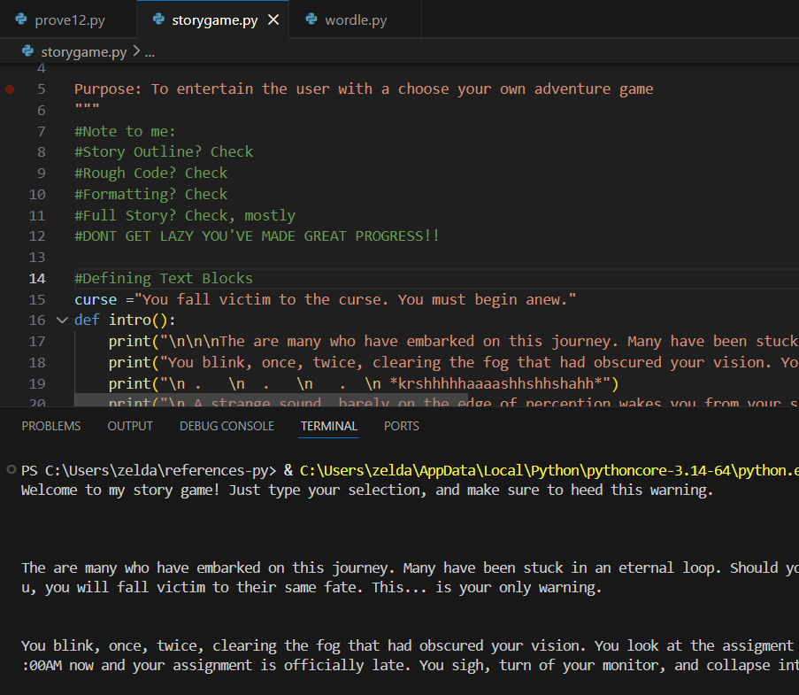
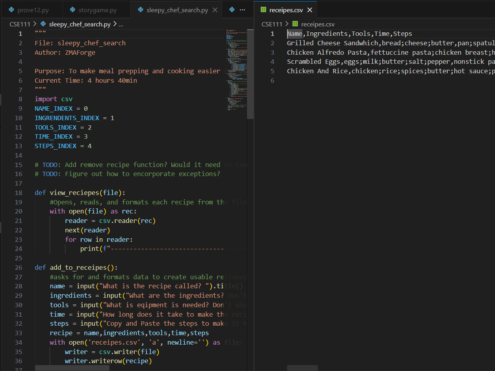

I, ZMAForge, have always been interested in learning aquiring new skills.
I believe this to be the best way to improve myself and learn how to make
complete and appealing prohects. It is with this in mind, that these projects
have been completed both as class projects, personal projects, and positions
I've held.
Select a Category to Filter Cards

Choose your own Adventure!
File Name: storygame.py
Purpose: To learn how to utlize nested if's in python. This
assignment was assigned in CSE110. I decided I wanted to seperate the
story chunks from the code itself, and as such gained an early introduction
to python functions to be able to call the predifined chunks of
code. This also enabled me to loop one branch of the story to another
as I decided was necessary.
Dad's Place
Job Position: Sanitation Expert
Job Overview: I was tasked with keeping an assisted living residence clean for 5 residents, which then
grew to 7 during my work there. I was in charge in memorizing the different cleaning process for each of
the residents, as well as specific cleaning processes for different materials. I was asked to work for exactly
4 hours in a single rush, so I had to adapt cleaning time to be meticulous and perfect in order to help protect
the residents as well as meet this tight time frame. Furthermore, the route and methods used had to change based off
of where each resident currently was, as well as around meal times, and guest visits. It was a physically
demanding but spirtually fulfilling position.

Sleepy Chef Search
File Name: sleepy-chef-search.py
Purpose: To combine all of what we had learned in CSE111 and make our own personal program.
I decided that I wanted to make a local meal aid for people who have difficulty making decisions.
This program uses a file that it reads and writes to. It has multiple functions, such as displaying
all the recipes it has stored with minmal information to prevent user overwhelm, search based off of
certain criteria and returning tha matching results,
and a step by step process for adding or removing recipes as needed. It is to this day one of my
proudest projects, as I came up with the project myself, and with some trial and error, got it working.